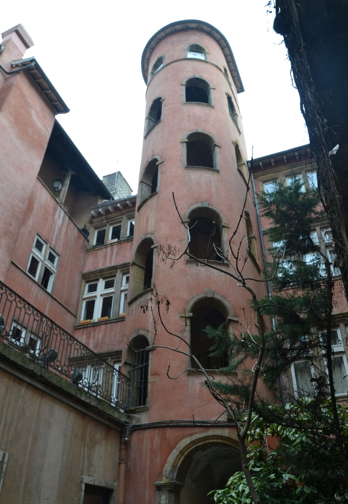
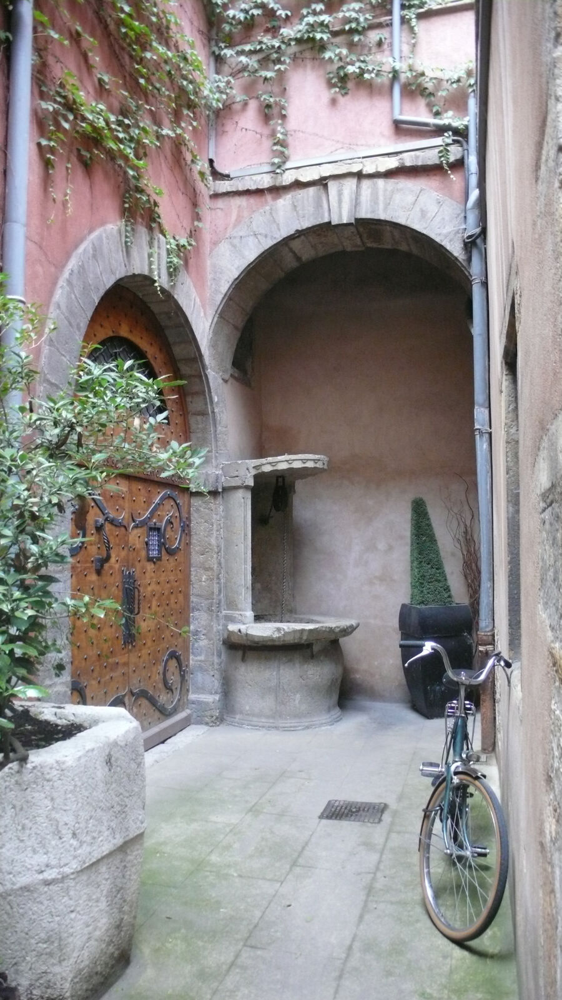
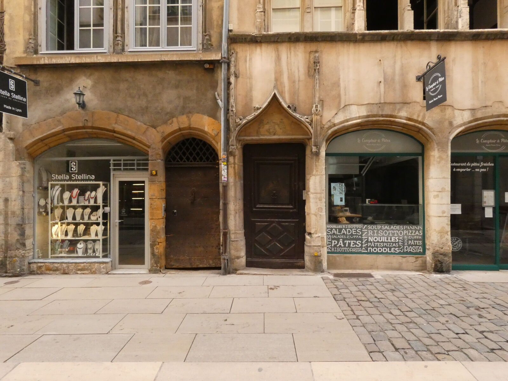
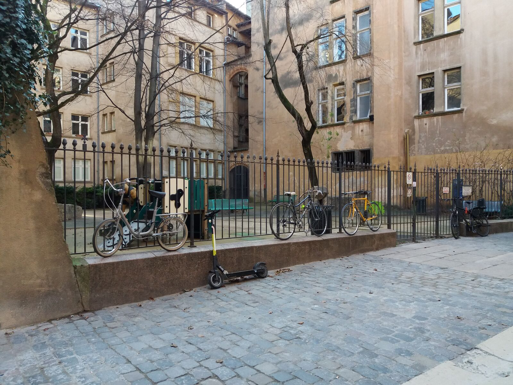
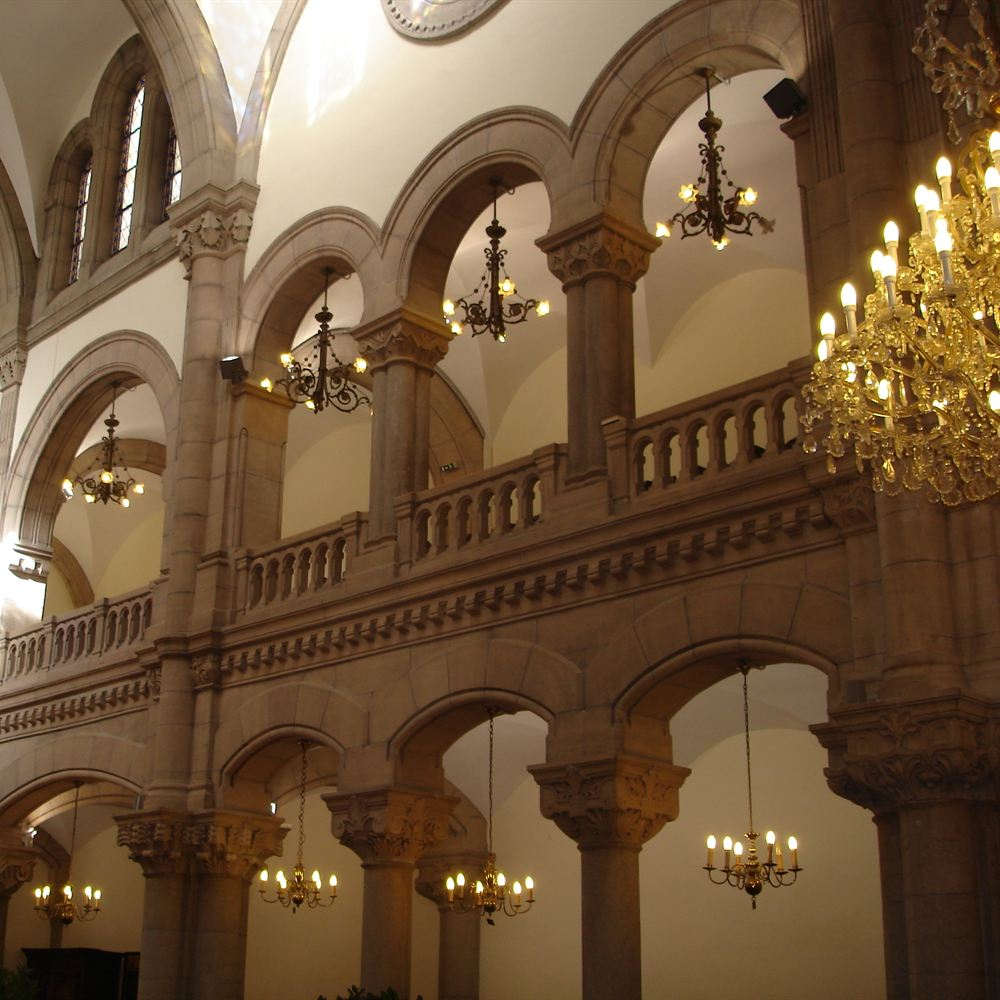
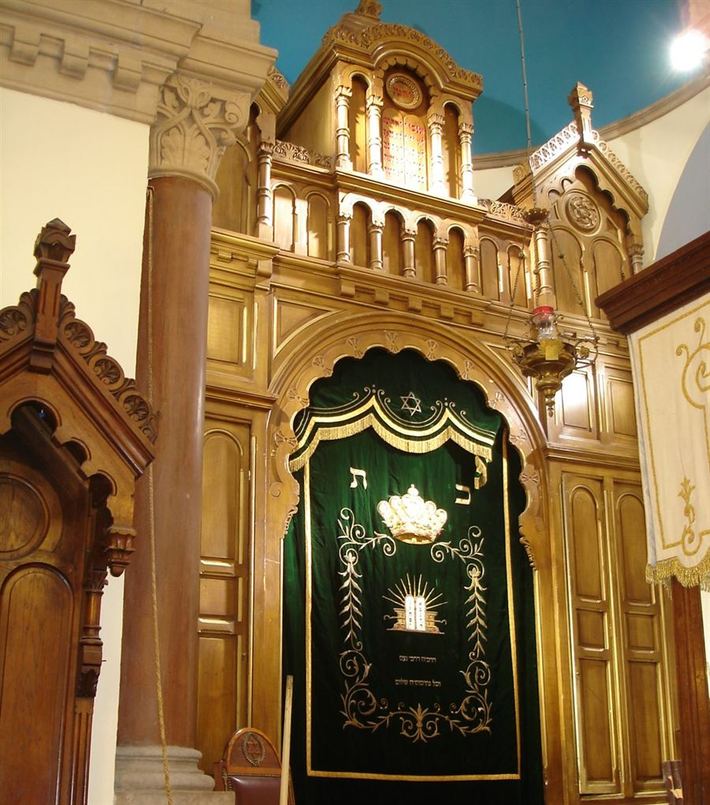
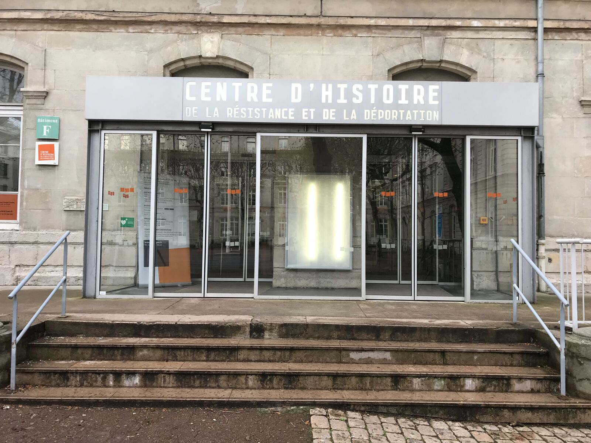
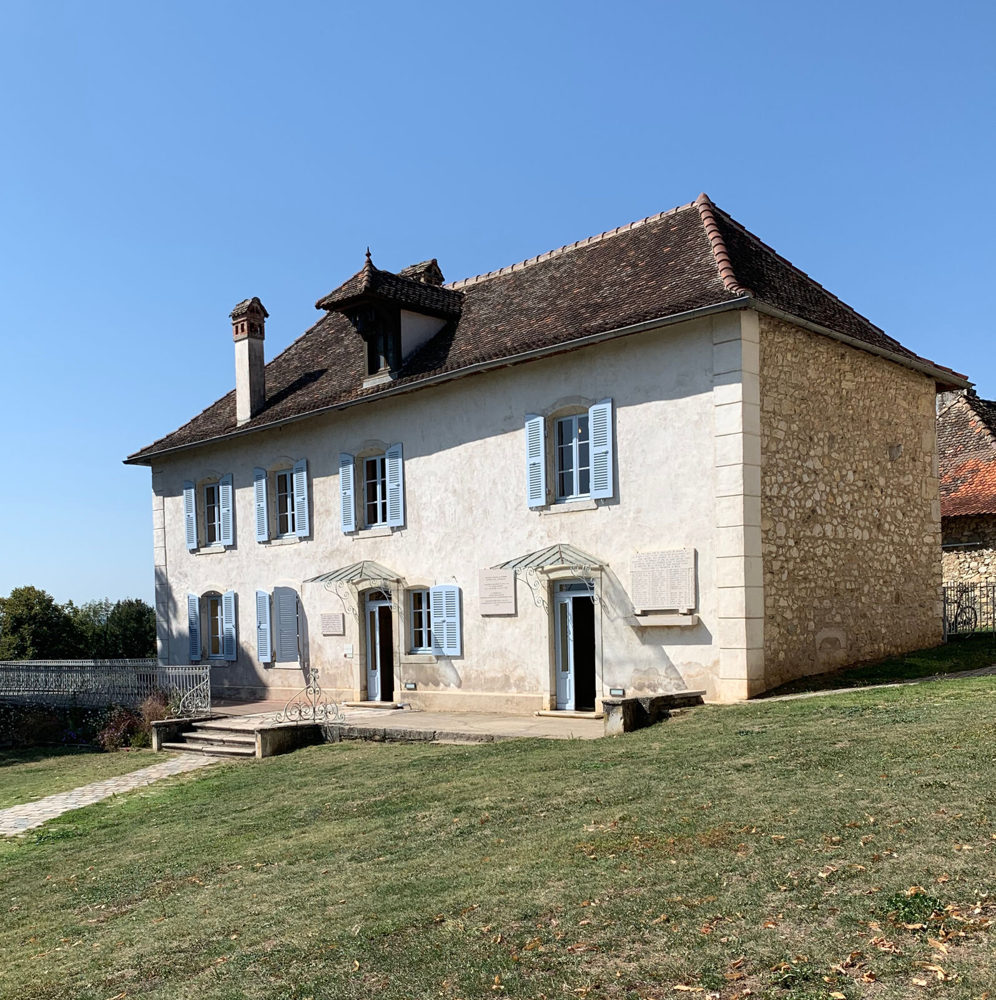

City walkStopover
Three hours in Jewish Lyon while your transfer waits
The Stopover is a private 3 hour walk in Vieux Lyon, including the Grande Synagogue, for 1 to 5 people at 390 € per group (+35 € per extra person up to 10), guided in English, French or Spanish. Your own transfer picks you up at the end, so you reach the resort on schedule. Your own transport drops you in Vieux Lyon and picks you up at the same spot three hours later. Your bags stay in the van; you walk into the Jewish story of Lyon and into the Grande Synagogue on quai Tilsitt, closed to visitors outside the Heritage Days.
How the tour unfolds
- 1
Drop-off in Vieux Lyon
Your own transport, van or private transfer, drops you at the meeting point in Vieux Lyon. Your bags stay inside; you carry nothing.
- 2
Vieux Lyon on foot
We walk through the Jewish story of the medieval old town, the same ground covered on the Jewish Lyon tour, at a pace built for three hours.
- 3
The Grande Synagogue
We go inside the Grande Synagogue on quai Tilsitt. Entry depends on opening hours and on security clearance on the day; your guide confirms before the walk begins.
- 4
Pick-up, on schedule
We finish at the time you give us, so your transfer leaves for the resort on schedule.
Know before you go
Included
- 3 hours of private guiding, in English, French or Spanish.
- Entry to the Grande Synagogue on quai Tilsitt, subject to opening hours and security clearance on the day.
- Drop-off and pick-up at the same meeting point in Vieux Lyon.
Not included
- Airport pick-up. Available on request, as a paid add-on, quote on demand.
- Transport to or from the resort.
- A security escort. Available on request on any tour, priced separately, quote on demand.
Places you will stand in






How we move through Lyon
- Private groups only. Your booking is never joined to strangers.
- Discreet routes. Routes and meeting points are chosen in advance and kept discreet.
- Known in the places we visit. Your guide is a member of the Lyon Jewish community.
- Security escort on request. On any tour, priced separately, quote on demand. Never included in the tour price.
Questions before you book
Where do we meet, and what happens to our bags?
We meet at a set point in Vieux Lyon. Your bags stay in your van or transfer; you carry nothing for the three hours.
What if our flight lands late?
Tell us your arrival time and your onward departure time when you book. We build the three hours around your schedule so you leave for the resort on time.
Is airport pick-up included?
No, it is available on request as a paid add-on, quote on demand.
Can I cancel if my plans change?
Yes, free cancellation up to 24 hours before the start time.
Other Mishpacha tours

City walkJewish Lyon
A private walk through the Jewish story of Lyon, inside the Grande Synagogue
290 € per group, 1 to 4 people

MemoryMemory: the CHRD
A private visit of the Centre d'histoire de la résistance et de la déportation
290 € per group, 1 to 4 people
 Memory
MemoryMemory: Montluc and Neveh Shalom
The Montluc memorial, then the second synagogue we take you inside
290 € per group, 1 to 4 people

Day tripIzieu
A full day at the Maison d'Izieu, one hour from Lyon
from 990 € quote on request